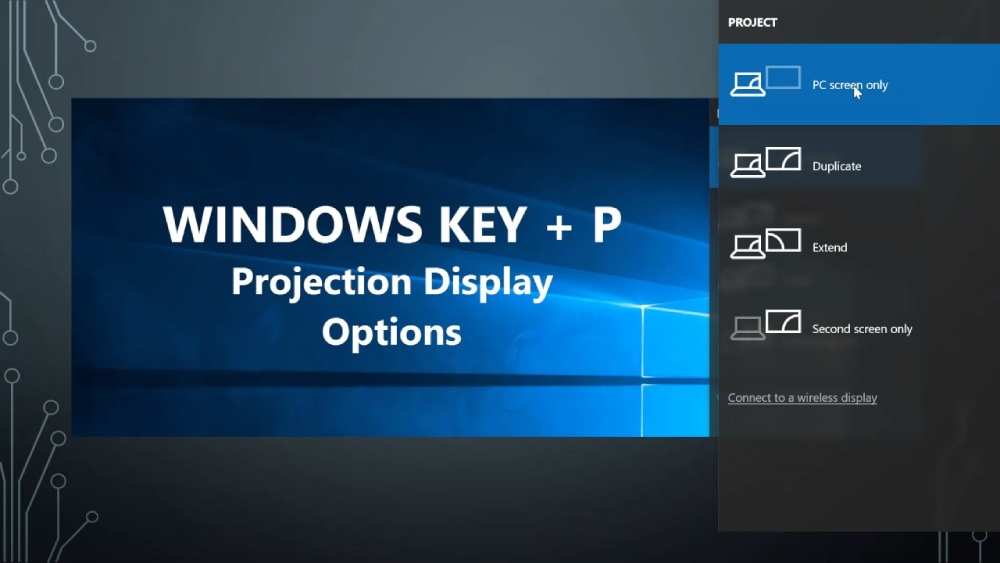
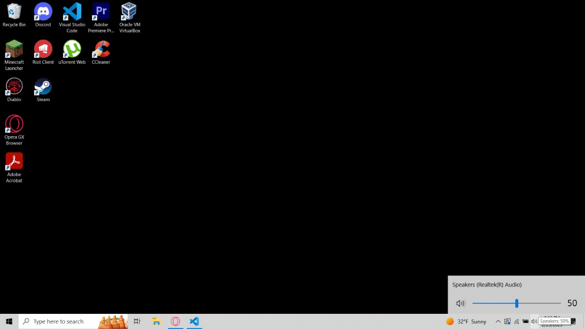
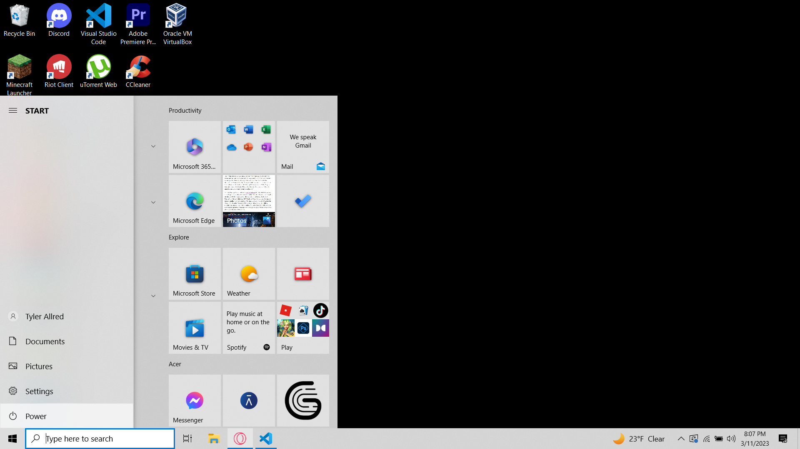

BYU Idaho | Classroom Technology
Troubleshooting
Here you can find some easy solutions to some potetial problems you or others may run into while using our system in our classrooms. We hope you learn something new!

Windows + P
One very common problem we run into is the projector showing a black screen. There can be a number of reasons why this could happen, but an often simple solution is to use Windows + P. When you press the Windows key and the P key it will pop up a menu where you can select how you want the second screen, in this case the projector, to be set up. Most people want it to simply extent what they see on their monitor, but sometimes you might want to use it as a second screen which is another option. So next time one of your professors are having troublke getting the projector to show their screen, check and see if Windows + P is the issue. It just might end up being the solution.

Audio Issues
Another very common problem we run into is Audio issues. There could also be many reasons why audio might not be working, but sometimes it's as simple as not having the right audio device selected. To make sure your on the right one, click the audio icon on the lower right of the screen and select the CRESTRON option. This wont always be the answer, but you'd be surprised how often it can be the solution you're looking for.

Reboot
It may sound cliché, but have you tried turning it off and on again? As simple as it sounds that's sometimes as simple as it is. Technology is often a mysterious mistress and she decides she just doesn't want to work for a number of reasons. So take the initiative and remind technology whose the real boss by turning the PC off and back on, this can fix way more problems then you'd ever expect and can often be the solution.